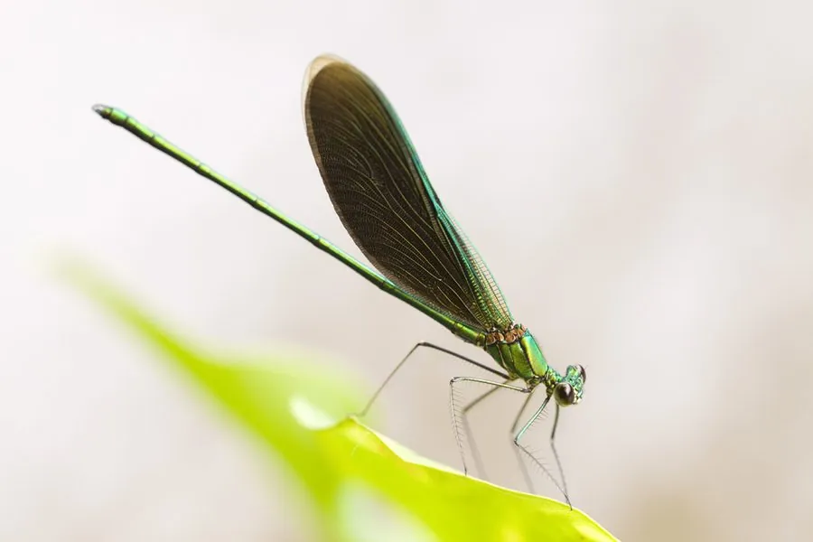

昆虫 · 动物界
天使翅膀蟌 Neurobasis chinensis

翅面呈金属蓝绿色的艳丽蟌类，停息时双翅合拢竖立，常在山溪石头上停留，是中国南方溪流的标志性昆虫。
- 分类
- 门节肢动物门纲昆虫纲目蜻蜓目科色蟌科属绿翅蟌属
- 栖息环境
- 清澈、流速较快的林间山溪，常停在水面突出的石头上
- 地理分布
- 中国南方，以及印度、东南亚的山地溪流
- 保护级别
- 暂无评估
物种志
天使翅膀蟌成虫体长 45–55 mm，是体型较大的蟌类。雄虫翅面呈深蓝绿色，闪着金属光泽，翅脉细密，在阳光下呈现宝石般的光彩；雌虫翅面褐色，翅端有白色斑块。身体细长，绿色带金属光泽，复眼分离。
天使翅膀蟌分布于中国南方及印度、东南亚的山地溪流，生活在清澈、流速较快的林间溪涧。雄虫有强烈的领域性，常停在水面突出的石头或枝条上，见到其他雄虫便起飞驱赶，飞行时蓝绿色的翅膀在阳光下闪烁。它捕食蚊、蠓等小型昆虫，稚虫（水虿）生活在溪流中，捕食水生昆虫。天使翅膀蟌的稚虫对水质要求较高，是评价溪流生态质量的重要指示生物。由于栖息地受到污染和旅游开发的干扰，其种群在部分地区有所下降。
形态与习性
- 食性捕食蚊、蠓等小型飞行昆虫
- 体长45–55 mm
- 翅色雄虫翅面深蓝绿色，具金属光泽
- 领域性雄虫停在水面石头上驱赶入侵者
- 稚虫水虿生活在溪流中，捕食水生昆虫
- 保护对水质要求高，可作为溪流质量指示种
趣味知识
- 雄虫的蓝绿色翅膀在阳光下会闪出金属光泽，飞行时格外醒目。
- 它停息时双翅合拢竖立在背上，与蜻蜓平展双翅的姿态不同。
- 天使翅膀蟌的稚虫只生活在清澈的溪流里，水质一变差就会消失。